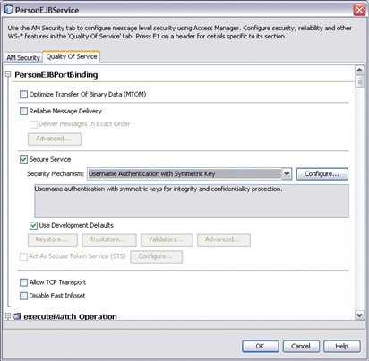
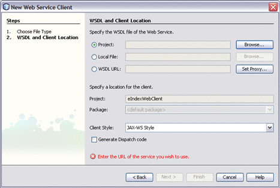
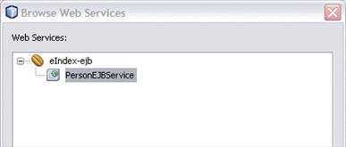
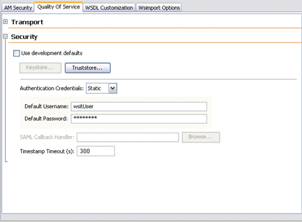

Defining Web Services Security for Master Index
Master Index Studio supports security at the user and function level for web services and web service operations. A secure user name and password must be defined for web service in order to connect to the master index application and database. For each web service user account you define, you must specify one or more roles in order for that web service to access any of the functions of the master index application. One default role, MasterIndex.Admin, is predefined and grants access to all functions. You define roles in the security.xml file in the master index project.
Web services for Master Index Studio are secured using the default Web Service Interoperability Technologies (WSIT) support provided by GlassFish and NetBeans. User accounts are created using the GlassFish Admin Console.
Perform the following tasks to configure security for the master index application:
Note that the master index application must be deployed and running in order to perform some of these steps.
Secure the Web Service
When you define security for a web service, you need to define certain keystore information.
To Secure the Web Service
- Complete the steps under Define EJB User Roles.
- In the NetBeans Projects window, expand the master index EJB project and then
expand Web Services.
The web service project is named after the master index project with “-ejb” appended; for example, Person-ejb.
- Right-click the name of the web service you want to secure, and then
select Edit Web Service Attributes
The Web Service Attributes window appears.
Figure 1 Edit Web Service Attributes
 - On the Web Service Attributes window, click the Quality of Service tab.
- Select the check box next to Secure Service to enable WSIT security for all web service operations.
- In the Security Mechanism field, select Username Authentication with Symmetric Keys.
- Deselect Use Development Defaults, and then click Keystore.
The Keystore Configuration dialog box appears.
- Click Load Aliases, and then select xws-security-server.
- Click OK on the Keystore Configuration dialog box.
- Click OK on the Web Service Attributes window.
- Continue to Secure the Web Client.
Secure the Web Client
To secure the web client, you need to provide the server's certificate to the client's truststore. Before performing this step, make sure you have created the web client project that will access the master index application. The master index application also needs to be deployed in order to successfully complete this step.
To Secure the Web Client
- Complete the steps under Secure the Web Service.
- In the NetBeans Projects window, right-click the web application project, point to New,
and then select Web Service Client.
The New Web Service Client Wizard appears.
Figure 2 New Web Service Client Wizard
 - Select the Project field, and then click Browse.
- In the Browse Web Services dialog, expand the name of the master index
EJB project, and then select project_nameEJBService.
Figure 3 Browse Web Services Dialog Box
 - Click OK.
- On the New Web Service Client dialog box, click Finish.
- In the NetBeans Projects window, expand the web client project, and then expand Web Service References.
- Right-click the web service reference you want to secure, and then select Edit
Web Service Attributes.
The Web Service Attributes window appears.
Figure 4 Edit Web Service Attributes
 - Click Quality of Service, and then expand Security.
- Provide a user name and password (you will also need to add
these to the application server using the Admin Console later).
Note - For testing, you can enter a default user name and password. For a production environment, you should configure Username Handler and Password Handler classes to eliminate the risk in using default values.
- Provide the server's certificate by doing the following:
- Click Truststore.
The Truststore Configuration dialog box appears.
- Click Load Aliases, and then select xws-security-server.
- Click OK.
- Click Truststore.
- On the Web Service Attributes window, click OK.
- Continue to Create Web Services User Accounts.
Create Web Services User Accounts
You create user accounts for web service access using the GlassFish Admin Console. You can assign any of the access roles you created in Define EJB User Roles to the user accounts you create.
To Create a User Account
- Complete the steps under Secure the Web Client.
- Log in to the Admin Console.
- In the left portion of the page, expand Configuration, expand Security, expand Realms, and then select File.
- On the Edit Realm page, select Manage Users.
- On the File Users page, select New.
- In the User ID field, enter a name for the user.
- In the Group List field, enter one or more of the user roles you defined in security.xml, or enter MasterIndex.Admin to grant access to all functions. Separate multiple roles with a comma.
- After you have added all required user roles, enter a password for the user in the New Password field.
- In the Confirm New Password field, enter the password again.
- Click OK.